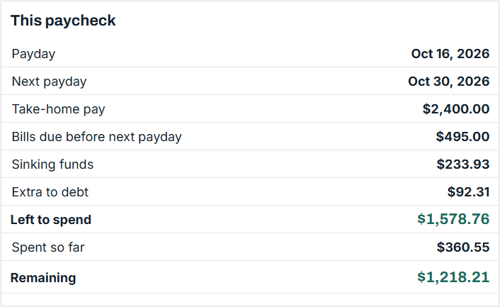
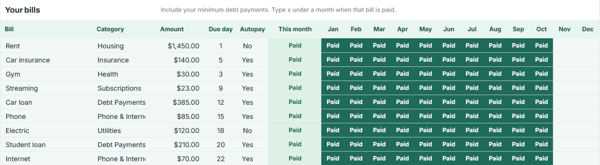
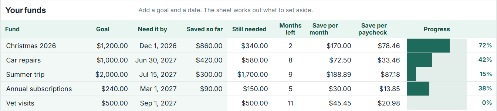
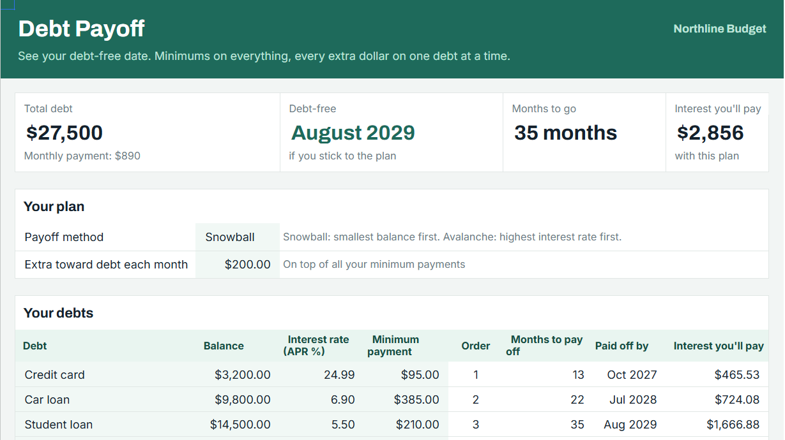
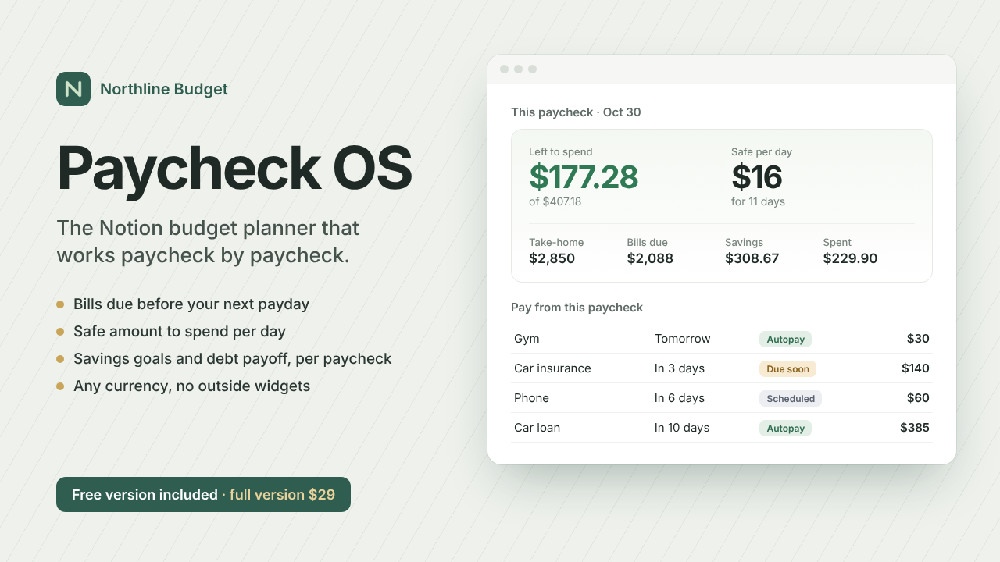

Plan every paycheck.
The Paycheck Budget Spreadsheet for Google Sheets and Excel puts every bill on the right paycheck and shows what's left to spend until the next payday.

Bills that don't slip
List bills once with their due day. Type x when paid. Bills due soon light up.

Sinking funds that fill themselves
Give Christmas, car repairs or a trip a goal and a date. The sheet splits it across your paychecks.

A debt-free date
Pick Snowball or Avalanche, add your extra each month, and see the month each debt is gone and the interest you pay.

Prefer Notion? Meet Paycheck OS
The same paycheck-first plan as a Notion template: bills due before your next payday, a safe amount to spend per day, savings goals and debt payoff worked out per paycheck. Any currency, no outside widgets.

Get it free
Free guides
- How to Budget When You're Paid Every Two Weeks
A step-by-step biweekly budget: match every bill to the paycheck before it's due, plan 26 paychecks a year, and know what's left to spend.
- Three-Paycheck Months in 2027 (Biweekly Pay)
Which months of 2027 have three paydays if you're paid biweekly on Fridays, and how to use the extra paycheck.
- Sinking Funds: How to Save for Costs You Know Are Coming
What a sinking fund is, how to calculate how much to save per paycheck, and a list of sinking fund ideas.
- Debt Snowball vs Debt Avalanche: Which Should You Use?
How the debt snowball and debt avalanche methods work, an example with three debts, and how to choose.
- How to Budget Twice-a-Month Pay (15th and 30th)
A semi-monthly budget: 24 paychecks a year, which bills go on which paycheck, and how it differs from biweekly pay.
- What Is a Paycheck Budget?
A paycheck budget plans each paycheck instead of the whole month. How it works and who it's for.
Questions
- Do I need Google Sheets?
- A free Google account is enough. The Excel version is included.
- Does it connect to my bank?
- No. You type in your numbers and they stay in your own file.
- What if I'm paid biweekly?
- Every payday of the year is listed, including three-paycheck months, and each bill is matched to the paycheck before its due date.
Get the spreadsheet for $24